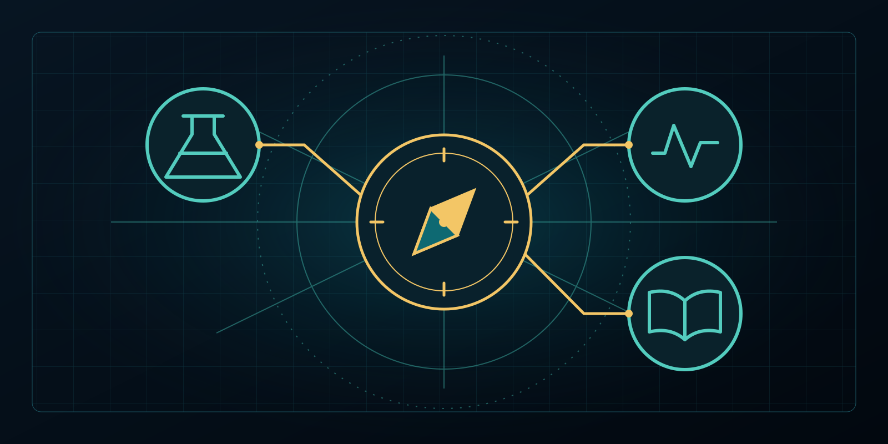

RANDALL YOUNG · HOW MUCH? ENOUGH?
Project Atlas
Randall Young’s public working archive of experiments, instruments, teaching materials, and the ideas that connect them.

Start here
How much? Enough? Measure what happened. Then decide whether it was enough for the purpose. Two places to see that kind of thinking at work:
- CORE 10 · One cup of water, two energy readings. Compare the heat gained by the water with the electricity the appliance used.
- Ten Problems That Teach Calculus. Start with the cart that reverses direction. It teaches why distance traveled and net change are not the same thing.
Read the Atlas
This is an idea backup. The point is to leave enough of the reasoning, evidence, and working material for someone else to pick up the work.
- Idea index · the principles and designs that recur across projects
- Project inventory · the documented systems, their maturity, and their current homes
- All 89 public repositories · searchable index including earlier versions and upstream forks
Explore the work
CORE
- CORE 10 · Teach science with ordinary phenomena and real measurements.
- Software-Defined Laboratory · Make instruments and experiments work across hardware, dashboards, and AI clients.
- Nugget Physical Computing · Start with inexpensive hardware and expose more of how the machine works as learners progress.
- Measured World Lab · Build instruments to investigate the things we encounter every day.
- Bargain Bin Robotics · Use low-cost robots as both machines and instruments.
- Computing Observatories · Make execution visible through simulators, Forth, and observable CPUs.
- Embedded Tools · Find the bridges, protocols, programmers, and debugging tools behind the work.
APPS
- Measured Human Performance · Make fitness and movement measurements interpretable and repeatable.
TRANSMISSION
- Works and Publications · Find the guides, papers, and visual explanations that help someone else carry the work forward.